Programming, electronics, lifestyle
Я занимаюсь веб-разработкой ещё со школы, и до появления этого блога я покупал домены руководствуясь исключительно экономическими соображениями.
За всё это время я был клиентом == держал домены у следующих регистраторов:
Когда пришло время регистрировать домен для этого блога, я чётко понимал, что хочу использовать зону COM. К этому был ряд причин:
Далее я приступил к поиску регистратора, удовлетворяющего моим критериям:
Я полез читать разные сайты на тему сравнения условий регистраторов. А также проверят те, что у меня на слуху: Godaddy, Gandi, Namecheap.
После долгого сравнения я пришел к выводу, что ничего лучше Namecheap нет. Он самый адекватный в ценовом отношении. Да и главная страница не напоминает какой-то непонятный лейдинг с фотографиями людей, где под видом личного бренда продают домены (скриншот с godaddy.com). Просто зашквар.
Этой статьи не было бы, будь все хорошо с Namecheap. И так начнем:
Ценовая политика: первичная регистрация по скидке стоит от 6 до 9$ в зависимости от акции, а затем 13.98$ в год. Не буду вдаваться в подробности, просто я хотел зарегистрировать домен сразу на 10 лет по цене порядка 8 долларов (по паре промокодов). Однако, у меня получилось зарегистрировать лишь на один год по цене в 6.4$ и всё. Я написал письмо в поддержку, но мне сказали, новый промокод не будет работать после применения другого. Что ж обидно, но ничего не поделаешь.
На следующий год с меня взяли 13.66$. Мне очень это не понравилось, но ничего я сделать не мог. 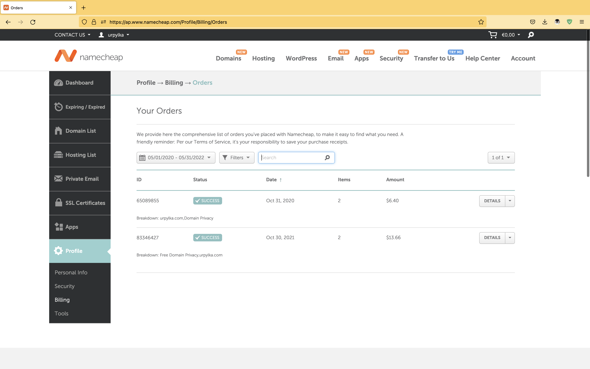 Кстати цена растёт с каждым годом, ниже скриншот на 31 мая 2022 ссылка на текущие цены. 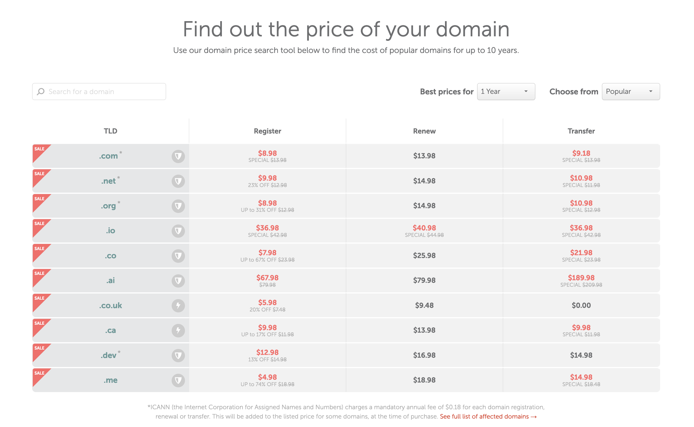
Несмотря на то, что они сразу после регистрации шлют письма аля от имени CEO, что они все такие responsible и friendly. На деле проблемы не решаются. Как в первой ситуации, так затем. Со второй проблемой я столкнулся через 3 дня. На почту мне пришло письмо со следующим содержанием:
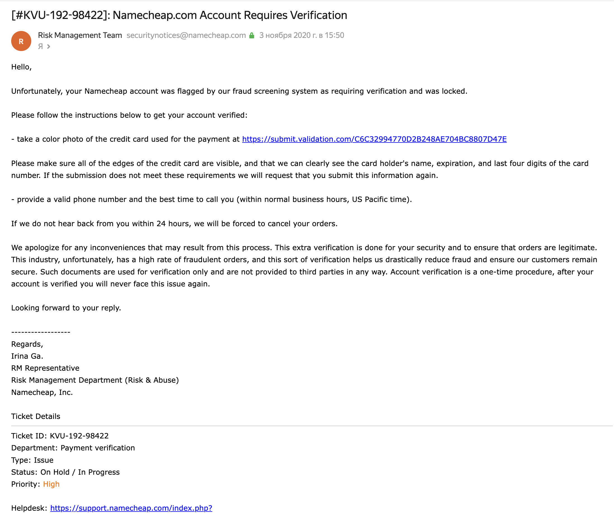 Я тут же предоставил запрашиваемые данные, однако мой аккаунт был заблокирован. Повезло то, что я разместил управление DNS зоной в другом месте. Я писал им пару писем касаемо того, что с аккаунтом все хорошо. Они мне звонили на сотовый и я подтвердил, что всё в порядке. Однако, лишь через 4 месяца я получил письмо с извинениями за ошибочку блокировку. И всё, ни компенсации за удобство, ни какой-то даже скидки на дальнейшие заказы. Эти ребята явно не знают, что такое хороший сервис. 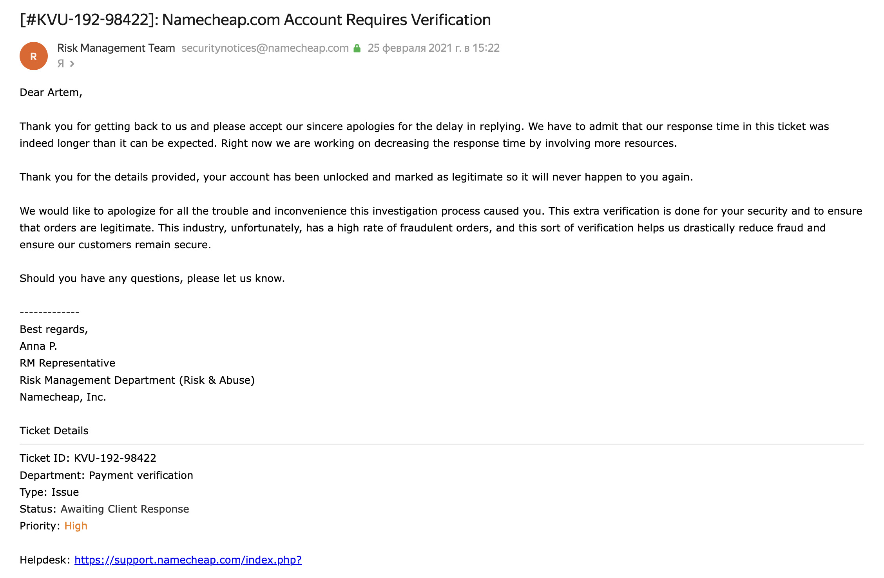 В общем, этого я никак не ожидал и был несколько в шоке.
Ну и, конечно, в связи тем, что происходит на Украине они решили заблокировать аккаунты россиян. Надо сказать, что они дали достаточно времени, чтобы я мог переместить домен к другому регистратору. Однако, я сразу подал заявление, что уже являюсь резидентом Латвии и через пару недель мой аккаунт внесли в whitelist. Может быть вы скажете, что давно было пора оттуда уйти, однако для меня красной тряпкой стала именно политика компании в отношении блокировок по паспорту.
Параллельно с подачей заявления на внесение моего аккаунта в whitelist, я начал поиск других регистраторов. Из тех, что мне понравились были две компании:
Fozzy. Хорошая цена для COM зоны 9.04$ фиксированная цена при регистрации и продлении. Несмотря на то, что компания владелец XBT Holding зарегистрирована в Люксембурге, у них есть российский офис. Однако, из общения с поддержкой, я так и не смог узнать дальнейшие планы компании касаемо отношений с Россией. Но пока из того, что можно судить компания не собирается уходить с российского рынка.
LTD Beget – также я рассматривал этот сервис, однако там я столкнулся со следующими проблемами:
Единственное, что мне понравилось – простой интерфейс после смены на тариф Парковка доменов
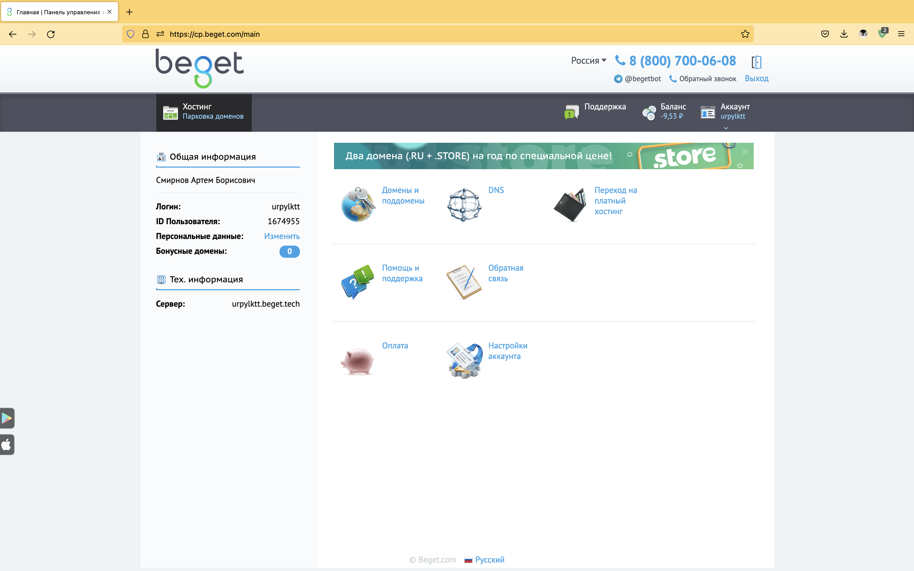
После детального изучения сервисов, единственным адекватным оказался Fozzy. Я немного успокоился и решил отложить этот вопрос на неопредленное время.
Для ясности: я работаю на позиции SRE и моя работа связана с обслуживанием Kubernetes кластеров. Я решил углубиться в темы балансировщиков нагрузки и Ingress контроллеров, и наткнулся на видео Techno Tim: Self-Hosting Your Homelab Services with SSL. В нём было продемонстрировано как Traefik в роли Ingress Controller сам выписывает новые поддомены по API на DNS сервисе Cloudflare. Меня это заинтересовало и я решил зарегаться там и потыкать на кнопочки в админке.
Для справки: Компания Cloudflare предоставляет следующие услуги:
1.1.1.1 и 1.0.0.1, а также возможность управлять собственной DNS-зоной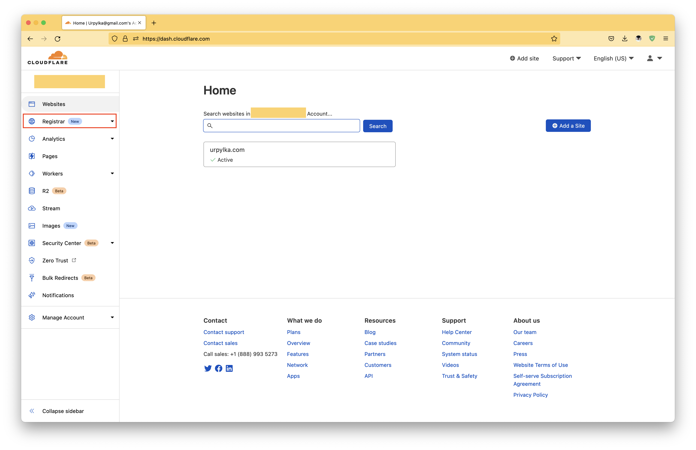
Среди разных кнопок я нашел Registar – сервис регистрации доменов. Вот немного информации о нём:
После изучения которой я могу с вами поделиться интересной информацией:
Cloudflare позиционирует себя как регистратор без наценок и без сюрпризов в изменении цены (Why choose Cloudflare).
What is Cloudflare Registrar?
Cloudflare Registrar is a service for registering domain names that doesn’t mark up the price for doing so. It offers essentially the same services as other domain name registrars but without markups, without increased renewal fees, and with some additional security features. In essence, Cloudflare Registrar is free – the only cost is what is charged by registries and by ICANN.
Действительно цена регистрации и продления всего 8.57$.
Такая цена обуславливается политикой компании – они считают, что любой у кого есть идея, должен иметь возможность воспользоваться преимуществами Интернета. Любой человек должен иметь возможность начать бизнес, продвигать организацию или создавать веб-приложение. При этом не попадая в ловушку, где ты каждый год вынужден платить больше без возможности это как-то контролировать.
Why does Cloudflare offer domain names at no cost?
Domain registrars sometimes try to take advantage of customers by luring them in with low initial registration fees, then marking up the prices for renewal hugely because customers often have no choice but to renew. However, registrars are essentially acting as middlemen, and the prices they charge are commonly disproportionate to the value they actually provide.
Cloudflare is on a mission to build a better Internet, and offering domain names without marked-up prices is one way to ensure that anyone with an idea can take advantage of the power of the Internet. Anyone should be able to start a business, promote an organization, or build a web application without worrying they will be charged unnecessarily for keeping their domain name. For this reason, Cloudflare passes along the prices charged by top-level domains and ICANN without any additional fees.
Достигается это за счёт отсутствия накладных расходов. Функционал регистрации доменом они давно реализовали для внутренних целей. А сейчас просто добавили, чтобы этим могли пользоваться люди.
How is Cloudflare able to do this?
All that is needed to register owners of domain names is a relationship with registries and the ability to send some commands to an API. From a technical perspective, the effort involved is minimal.
Cloudflare built its own internal domain name registrar well before offering Cloudflare Registrar, in order to keep our domains secure. This made it relatively simple to transition into offering domain registration to the world.
Плюсы несомненны и я думаю это будет своего рода Let’s encrypt в мире регистраторов доменов. И это несомненно поменяет эту индустрию, тк остальные жестко наживаются на своих клиентах.
Но надо понимать, что как любая другая коммерческая организация Cloudflare зарабатывает деньги, просто не на доменах, а на других услугах. Все было бы идеально, однако, есть одно ограничение, вы не можете хостить DNS зону вне Cloudflare. Для меня это не проблема, тк наоборот мне нравится их сервис, и в этом направлении он полностью бесплатен. Что мне подходит.
Помимо базового функционала управления DNS зоной есть несколько крутых фишек:
Меня очень понравилась политика компании и идея которую привнёс Cloudflare. И вчера я перенес домен от Namecheap к Cloudflare.
Если раньше, в росссийской юрисдикции нужно было делать нотариальные доверенности для таких операций. То сейчас для многих зон есть функционал переноса домена по токену. Не буду вдаваться в подробности описание этого вы найдете здесь.
У меня весь перенос занял минут 10. При этом потребовалось сразу заплатить за продление домена на год вперед (остаток времени при переносе не теряется).
Ниже несколько скриншотов процесса переноса домена.
В личном кабинете разблокируем домен и нажимаем AUTH CODE. Далее вводим почему уходим из Namecheap.
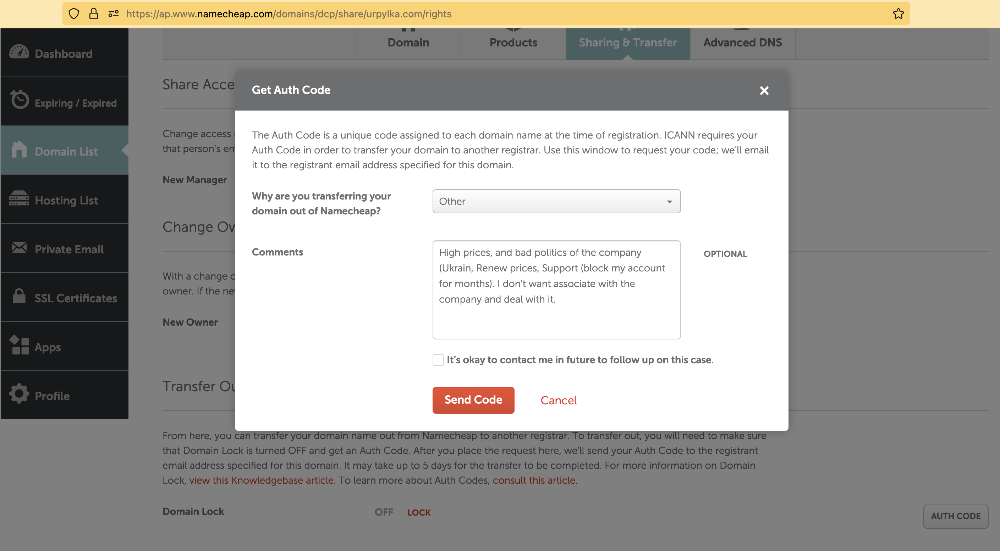
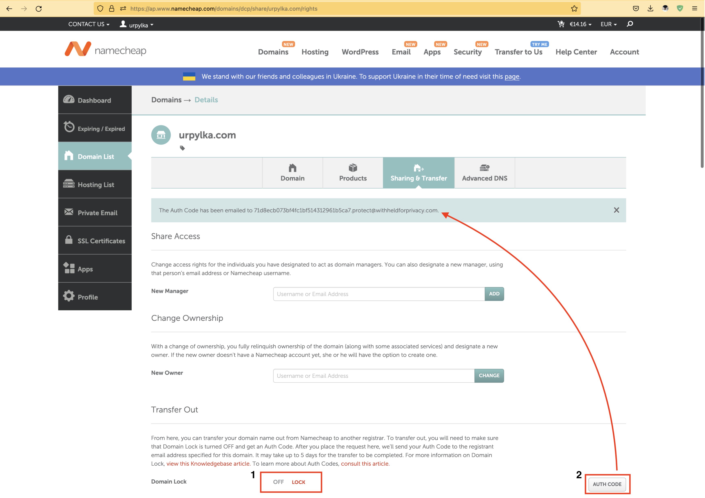
И на почту приходит письмо:
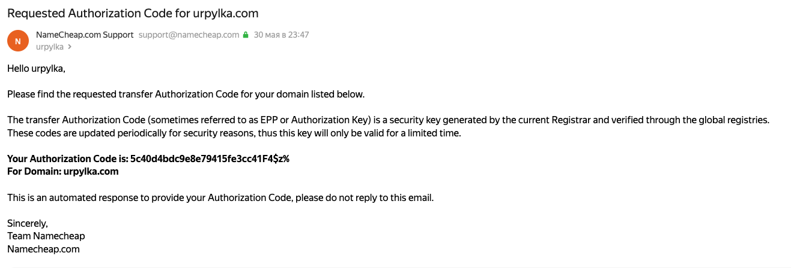
Далее добавляем платежные реквизиты и вводим код в Cloudflare:
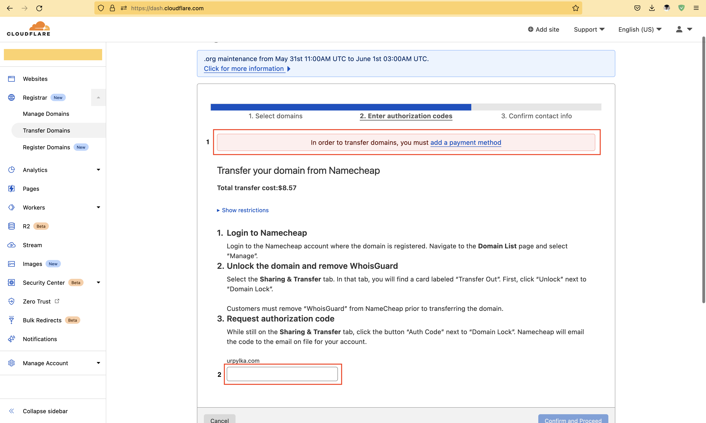
После этого, нужно дождаться, когда перенос одобрит предыдущий регистратор. Это так же можно ускорить, если пройти по ссылке из второго письма.
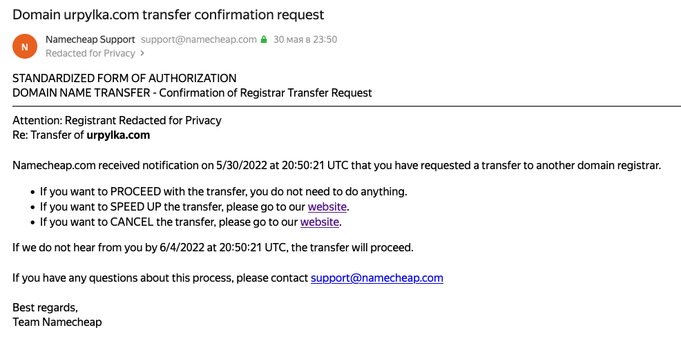
После чего вводим данные о владельце домена в Cloudflare и домен перенесён.
Приятно, что в Cloudflare ты в любой момент можешь продлить домен до 10 лет вперед.
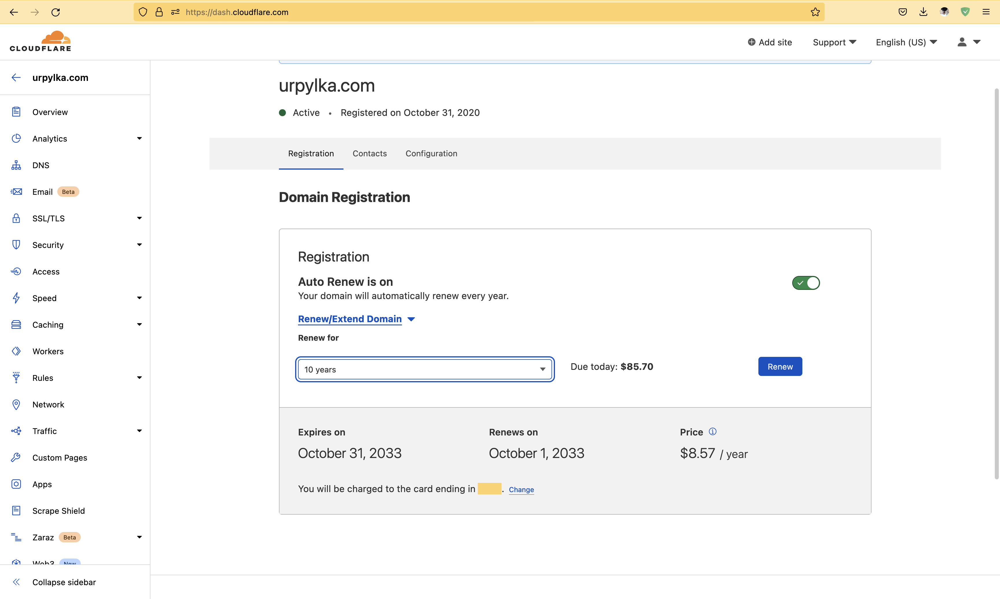
Я сразу продлил домен еще на 7 лет до 2030 года, чтобы зафиксироваться на текущей цене.
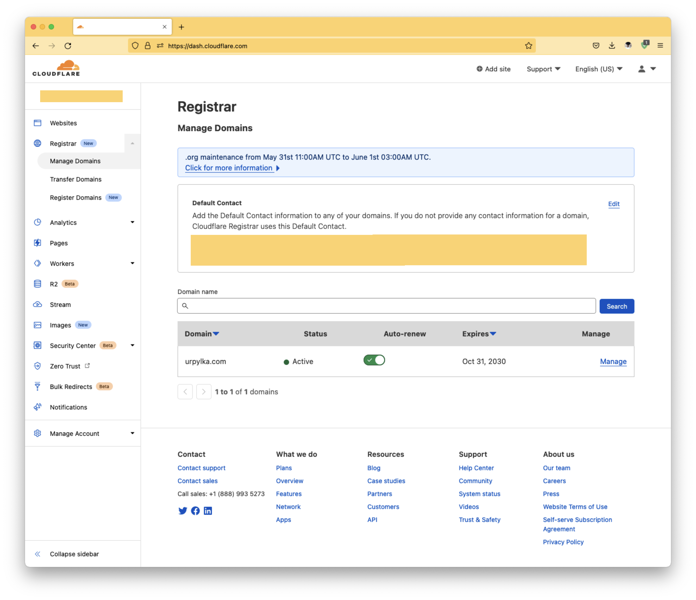
Статья получилась большой, я постарался рассказать историю как есть. Надеюсь это будет полезно для людей, которые ищут где зарегистрировать домен или куда перенести свой. Учитывая вышесказанное, а также хорошую репутацию компании Cloudflare это один из самых выгодных вариантов.
{kind=link}